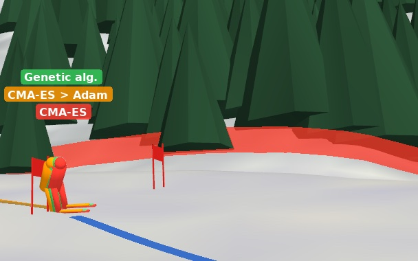

Adam racing through a Giant Slalom gate on a 3D model of the Gran Risa." width="608" height="380" loading="lazy">In progress · with Kyle Robin
Ski Racing-Line Optimizer
A Giant Slalom simulator built on the real 3D terrain of the Gran Risa World Cup course in Alta Badia, used to test how evolutionary algorithms and gradient descent search for the fastest safe racing line. It brings together my years as a FIS ski racer and evolutionary computing.
The evolutionary method CMA-ES found lines 1.4 s faster than a grid-search baseline. Ablation experiments showed that most of gradient descent's gap came from biased penalty terms in the smoothed loss it relies on, not from the method itself.